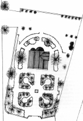

|
La formazione
delle Pievi
La
formazione delle Pievi nell’antichit� � strettamente legata al processo
di diffusione del Cristianesimo nelle campagne e al conseguente estinguersi
del paganesimo. Come il processo di diffusione del messaggio di Cristo
non deve essere considerato quale fenomeno omogeneo e continuo e forza
che coinvolse automaticamente e nella stessa misura il popolo, cos� la
formazione delle Parrocchie Rurali deve essere vista come processo graduale,
diverso da zona a zona.
Fino al III secolo non conosciamo niente di preciso a proposito della
diffusione del Cristianesimo. Possiamo solamente dire che si era propagato
con maggior facilit� nei Paesi Orientali, mentre per quanto riguarda i
Paesi Occidentali ed in particolare l’Italia, molte furono le difficolt�
che esso aveva incontrato nella sua espansione. Due furono gli ostacoli
pi� duri da superare nel nostro Paese:
1) le classi colte che vedevano nel Cristianesimo un avversario all’egemonia
politica di Roma;
2) le plebi che erano attaccatissime ai loro culti locali.
Per quanto riguarda il primo ostacolo possiamo dire che le classi colte,
dopo qualche periodo di resistenza, avevano accettato il Cristianesimo
come religione ufficiale.
Il secondo ostacolo fu molto pi� arduo da superare e, se nelle citt�,
la nuova religione si diffuse pienamente nel IV secolo, nelle campagne
ancora alla fine del VI-VII esistevano nuclei pagani. La frequente presenza
degli imperatori cristiani da Costantino in poi con i loro eserciti, la
creazione delle prime diocesi nei centri pi� importanti e pi� popolosi,
l’influsso di Roma per l’Italia Meridionale e di Milano per
il Settentrione, furono certo elementi di grande importanza per la diffusione
del Cristianesimo tra le popolazioni cittadine.
Nelle campagne questi influssi si fecero sentire in maniera decisiva molto
pi� tardi rispetto alle citt� e, il messaggio cristiano, anche se arriv�
alla popolazione agreste prima della formazione delle Parrocchie Rurali
mediante i missionari e gli stessi abitanti della citt�, fu frammentario
e dispersivo e non poteva certo competere con l’attaccamento delle
plebi alle loro divinit� locali.
In campagna la vita quotidiana era, anche nell’antichit�, pi� impregnata
di religione di quanto non si verificasse nell’ambiente cittadino.
La popolazione rurale conservava tenacemente culti preromani, romani,
gallici e orientali che si erano sovrapposti e mescolati con il passare
del tempo.
Accanto a questo aspetto non dobbiamo dimenticare che il culto di una
specifica divinit� era tipico di un intero gruppo sociale. La religione
veniva cos� ad assumere un aspetto sociale e comunitario per cui un dio
locale diventava un elemento molto importante per garantire l’unit�
di un certo numero di individui.
La diffusione del Cristianesimo tra le popolazioni rurali dunque, fu compito
difficoltoso per la Chiesa. E se il Sud, grazie alla vicinanza di Roma,
pot� avere alla fine del IV secolo numerose diocesi, il Nord cristiano,
nonostante la notevole influenza di Milano, non riusc� ad assorbire facilmente
la popolazione rurale.
L’opera dei Vescovi di Milano fu molto ardua soprattutto perch� proprio
nel Settentrione l’attaccamento agli dei pagani era molto forte e
non bastavano certo le piccole comunit� cristiane esistenti nel territorio
agreste e gli intraprendenti missionari a debellare i culti idolatrici.
Occorreva, se mai, da parte della Chiesa una organizzazione capillare
nelle campagne, formata di piccole cellule di valore basilare che svolgessero
anche nel territorio del pagus tutte le funzioni che le diocesi avevano
gi� nelle citt� grandi per convertire, prima attraverso la predicazione
e poi attraverso il Battesimo, la popolazione agreste alla parola di Cristo.
Proprio per adempiere a questo compito la Chiesa decentr� la parrocchialit�,
un tempo raccolta nella chiesa cattedrale, cre� delle "ramificaziooni":
le cosiddette Parrocchie Rurali che nell’Italia Centro-Settentrionale
furono chiamate Pievi. In altre parole le Pievi e pi� in generale le Parrocchie
Rurali, costituirono le cellule basilari della Chiesa e furono create
proprio in quei luoghi che, dal punto di vista geografico, sociale, economico,
giuridico, potevano meglio irradiare il messaggio cristiano. Nacquero
insomma dove era stabilito il popolo e si pu� dire, a ragione, che la
storia della Parrocchia Rurale sia la storia del popolo rurale.
Lo stesso nome "Pieve" non fu usato a caso: esso deriva dal
latino "plebs" (plebe) secondo la definizione data da Tacito
e da Ammiano Marcellino e stava ad indicare la pi� modesta classe sociale
degli uomini liberi, sia presso i Romani sia presso i Germani. Nel nostro
caso questo termine indica i villici, cio� gli uomini delle campagne che
si raggruppavano nelle Parrocchie Rurali come entit� sociali e poi necessariamente
come entit� territoriali. E' facile capire che, tenendo conto della tendenza
della filosofia cristiana a spiritualizzare ogni cosa, anche nella vita
concreta, attraverso un processo mentale di astrazione, "plebs"
fu estesa al tempio ove il popolo si riuniva, cos� come il nome "ecclesia",
non solo indic� la riunione dei fedeli, ma il luogo di adunanza dei fedeli
stessi. Inoltre il termine "plebs" indicava talvolta anche il
distretto civile, raccogliendo in s� tutti gli aspetti della vita delle
campagne.
Cos� la diffusione del Cristianesimo nelle campagne e quindi la corrispettiva
nascita delle Parrocchie Rurali, si erano realizzate in modo che la comunit�
cristiana si compenetrasse nell’aggregato sociale, economico e giuridico
entro cui essa viveva partecipando alla sua stessa vita.
Fu certo una decisone sapiente della Chiesa quella di avvalersi dei preesistenti
ordinamenti sociali delle campagne per creare le Pievi, ma ci� non bast�,
almeno agli inizi, ad assicurare al Cristianesimo una facile diffusione
nei territori agresti.
Non dobbiamo dimenticare che la popolazione rurale � lenta e restia a
compiere il "primo passo", proprio perch� troppo spesso non
ha coscienza di una evoluzione sociale.
Quando si pensa alla formazione di una Pieve, viene spontaneo immaginare
che il Vescovo mandasse uno dei suoi Sacerdoti in una localit� adatta
all’organizzazione di una Parrocchia Rurale che raccogliesse gli
abitanti di un distretto. In realt� quest’opera di organizzazione
non si effettu� grazie all’attivit� del singolo, n� immediatamente,
ma fu la risultante del lavoro di un gruppo di Sacerdoti e si svilupp�
con gradualit�. I ministri di Dio, che si dedicavano alla creazione di
una Pieve, erano numerosi e avevano una gerarchia che si modellava sull’esempio
di quella della Cattedrale, naturalmente in maniera ridotta. Abbiamo a
questo proposito, diverse testimonianze che parlano di tale gerarchia,
composta di Accoliti, Suddiaconi, Diaconi e Presbiteri.
Il problema si fa complesso quando si tenta di stabilire come viveva il
clero della Pieve, perch� non abbiamo documenti che ci diano notizie in
proposito e dobbiamo affidarci esclusivamente alle interpretazioni, diverse
e contrastanti, degli storici che si interessarono di tale questione.
Noi ci limiteremo a citare due posizioni tra di loro contrarie: quella
del Forchielli e quella del Palestra.
Il Forchielli ci parla di vita in comune del clero e quindi di collettivit�
di beni nelle Pievi, perch� la Chiesa aveva avuto organi molteplici che,
per tutto il Medio Evo, furono collegiali: a questa regolamentazione non
fecero eccezioni le Parrocchie Rurali. Se la costituzione della Chiesa,
sempre secondo il Forchielli, fu per molto tempo corporativa e se la propriet�
ecclesiastica fu collettiva, i pi� antichi patrimoni parrocchiali non
furono i benefizi, bens� beni comuni le cui rendite servivano al sostentamento
dei Chierici.
Lo stesso concetto di "titolare", che designa l’amministratore
dei beni plebani, figura molto importante nella dottrina canonistica,
dimostra che il patrimonio delle Parrocchie Rurali non poteva essere la
concessione in precario del beneficio. Quest’ultimo fu se mai il
prodotto della successiva individualizzazione del patrimonio, prima comune
e collettivo, e non una forma di reddito a s� stante. In altre parole,
come nella storia della propriet� civile, per il Forchielli, si passa
da forme collettive a forme individuali di possesso, cos� nella storia
della propriet� ecclesiastica si passa da forme collettive, collegiali,
corporative, a forme individuali e beneficiarie.
Il Palestra � su posizioni molto diverse nel momento in cui afferma che
la Pieve non include necessariamente il concetto di vita comunitaria e
che, anzi, proprio perch� il clero della Parrocchia Rurale era un "clero
itinerante", tutto intento a portare tra la popolazione rurale il
messaggio cristiano, la vita in comune era pressoch� impossibile.
Partendo da questo presupposto il Palestra arriva a dire che l’unica
fonte di reddito del clero plebano era costituito dal beneficio e dalla
libera elemosina.
|
|
indice
presentazione
formazione delle pievi
cenni
storici
descrizione architettonica

planimetria
del luogo
ove sorge la Pieve
disegno
di
Ferdinando Gavarini
|